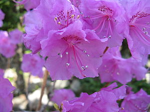

꽃을 먹을 수 있고 약에도 쓸 수 있어서 참꽃이라고도 부른다.[1] 꽃 색깔이 붉은 것이 두견새가 밤새 울어 대 피를 토한 것이라는 전설 때문에 두견화(杜鵑花)라고도 한다.
간도지역의 재중동포들은 진달래를 천지꽃, 천지화라고도 부른다.[2]
생태
산지의 양지쪽에서 자라며 높이는 2-3m이고 작은가지에 비늘조각이 있다. 잎은 어긋나고 긴 타원상 피침형 또는 도피침형이며, 양 끝이 좁고 가장자리가 밋밋하다.
표면에는 비늘조각이 약간 있고 뒷면에는 비늘조각이 밀생하며 털이 없다.
꽃은 4월에 잎보다 먼저 피고 가지 끝부분의 곁눈에서 1개씩 나오지만 2-5개가 모여달리기도 한다. 화관은 벌어진 깔때기형으로,
지름은 3-4.5cm, 자홍색에서 홍색을 띠고 겉에 털이 있으며 가장자리가 5개로 갈라진다.자홍색에서 홍색을 띠고 겉에 털이 있으며 가장자리가 5개로 갈라진다.
자홍색에서 홍색을 띠고 겉에 털이 있으며 가장자리가 5개로 갈라진다.자홍색에서 홍색을
띠고 겉에 털이 있으며 가장자리가 5개로 갈라진다.자홍색에서 홍색을 띠고 겉에 털이 있으며 가장자리가 5개로 갈라진다.자홍색에서 홍색을 띠고 겉에 털이 있으며
가장자리가 5개로 갈라진다.자홍색에서 홍색을 띠고 겉에 털이 있으며 가장자리가 5개로 갈라진다.